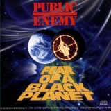
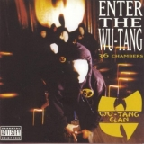
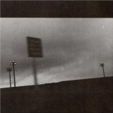
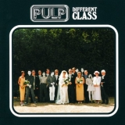
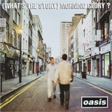

Top 100 Albums of 1990-1999 (Part Seven: 20-16)
By No Ripcord Staff
Is it a shameless ploy to string you along for a little longer? Maybe, but we thought that by virtue of being in the top twenty, these albums deserves a little more care and reflection than all those that went before them. So you may only be getting five albums a day from now to the end, but we've gone that extra mile to show you just why they're so great and why they're worthy of their place so near the top of the chart.
[Bubbling Under] | [Writers' Picks] | [100-81] | [80-61] | [60-41] | [40-21] | [20-16] | [15-11] | [10-6] | [5-1]
20. Public Enemy
“Fear Of A Black Planet”
(Def Jam / Columbia – 1990)
Public Enemy’s situation prior to the release of Fear Of A Black Planet: their previous album had changed the rap landscape forever. They were accused of racism due to the idiotic and pointless Professor Griff making anti-Semitic comments in an interview. They were losing fans to the growing gun obsessed gangsta scene. Public Enemy’s solution? Kick Professor Griff out of the group, make an album almost entirely about racism and provoke the media by comparing yourself to Jesus. Bold move, Chuck. Opening DJ track Contract On The World Love Jam confronted all of the controversy. Burn Hollywood, Burn and 911 Is A Joke both took on racist institutions. Even the music was challenging society. Brothers Gonna Work It Out took sampling to another level, giving us a cacophony of samples from Public Enemy’s previous two albums. Welcome To The Terrordome provided a high-speed mutant riff that underpinned the fury in Chuck D’s rap; a rap that featured the infamous line, “Still they got me like Jesus.” Revolutionary Generation did something entirely new to rap: it actually advocated feminism. Flava Flav’s role as a hype man took on a new dimension. His interruptions on the title track transformed into an imitation of the society that Chuck D was railing against. The great aim of Fear Of A Black Planet was to challenge and second-guess the listener, leading to one of the truly great moments in recording history. Power To The People begins with a calm backing, only for Chuck D to bellow, “AND YOU THOUGHT THE BEATS SLOWED DOWN, COME ON!” before launching into a rapid mix of scratches, voices and the thousand other samples that the Bomb Squad layered on. At this point Fear Of A Black Planet turns into a scattershot Abbey Road-style mix of blending songs, ultimately culminating in the furious call to arms, Fight The Power. You could never accuse them of not stepping up to a challenge. James McKenna
Playlist: Fight The Power
19. Wu-Tang Clan
“Enter The Wu-Tang (36 Chambers)”
(Loud – 1993)
Enter The Wu-Tang (36 Chambers) marks the start of a hip-hop empire that still exists to this day, and the debut of an immensely talented group of rappers, the likes of which will likely never be seen again. Latter day crews such as Odd Future, Raider Klan and A$AP Mob each possess a few unarguably talented members, but not in the sheer force as the Wu rolls with. Enter The Wu-Tang (36 Chambers) is a dusty masterpiece of wordplay, wit and one-upmanship with members feeding off each other’s energy, creating a cohesive feel which provided what a tightknit unit they were. Within this album we get our first tastes of Method Man’s irresistible blunted drawl of a flow, showcased on his eponymous track; Ol’ Dirty Bastard’s demented, unhinged and unique rapping style; Ghostface Killah’s rapid stream of consciousness flows; GZA’s immense lyrical intelligence, and Raekwon’s storytelling, which combine to form probably the most varied display of rapping talent you’ll likely ever find in a single album. RZA’s acumen as a producer is immediately recognisable from the word go, his impeccable sample spotting providing a grimy and realistic feel to the album which the members turn to their advantage, and his use of dialogue from kung fu movies provides an image and sound that would be the trademark of the Wu for years to come. Top highlight, C.R.E.A.M., is one of the most well-known songs in the whole of hip-hop; its instantly recognisable piano sample and mantra that is known all over the globe providing most peoples gateway experience into the entire group and solo discography with its numerous gems to uncover. Its spiritual successor, A Better Tomorrow, will be released this year to mark the 20th anniversary and if it manages to match up to this, I’ll eat my hat. Richard Petty
Playlist: C.R.E.A.M.
18. Godspeed You! Black Emperor
“F♯ A♯ ∞”
(Constellation – 1997)
F♯ and A♯ are a major third apart. When played in tandem, the two notes should ring out as a chipper, uplifting harmony: self-sustaining, resolute, and balanced. However, when reversed, the relationship between A♯ and F♯ is a minor sixth: a sort of dreary suspension that never quite resolves, even when reverting back to a perfect fifth. Itʼs a relationship with no synergy, no centre and absolutely no finality. Perhaps this, 'A♯ F♯ ∞', is the more appropriate title for Godspeed You! Black Emperorʼs first recording, a collective gasp resulting from years of global crisis, the buying and selling of humanity on the world market, and the omnipresence of imminent nuclear threat. The sounds created by Godspeed You! Black Emperor seem at once contemporary and ancient, as if the group had channelled a primal noise that had existed at the core of humanity for many, many centuries, but could only be realised after decades of droning, electronic meditation. Using tape loops and spoken word excerpts, the group works itself into a brooding, contemplative, musical prayer, a process that seems just as politically charged as it does spiritual. The passing of each repetitious violin stroke, subdued guitar rattling, and sporadic percussive blast welcomes a feeling of expansion, with every miniscule nuance gradually becoming more punctuated and profound. And then, all at once, a dramatic climax is reached and a wall of sound washes over us, psychically cleansing us from within. Perhaps F♯ A♯ ∞ is the appropriate title for an album that excises so much negativity, anxiety, and frustration through a single majestic catharsis. Perhaps the simple, content finality between root and major third is the intended end result of such a purge, leaving the listener cleansed and renewed. Or perhaps itʼs representative of the beauty and stillness born out of disaster, a sort of hollowed-out Zen state that can only be found in the rubble and desolation at the end of days, a mere reverberation of humanityʼs collective death-rattle ringing out in the distance evermore. Andrew Ciraulo
Playlist: East Hastings
17. Pulp
“Different Class”
(PolyGram / Island – 1995)
Britpop seemed to delight mid-nineties critics and audiences eager for new British guitar heroes. Much of the media's attention focussed on the immature contention between Blur and Oasis, but Different Class by Sheffield's Pulp – a group whose non-reliance on guitars painted them, just as they’d wish, as outsiders looking in – is probably the best artistic statement to come from what was a very backward-looking movement. Following years of relative obscurity, this record soundtracked a career renaissance for the band, kickstarted by a slot at Glastonbury and the anthemic single, Common People – a track adored both by the people who “get it” and those who don’t realise that the song is basically about them. Jarvis Cocker's witty docu-dramas of working class life in post-acid house Britain turned the geeky former art student into the Morrissey of his generation and an unlikely pin-up. With influences that included Serge Gainsbourg and disco alongside traditional Brit-beat bands, Different Class struck a chord with a wide range of music lovers who were charmed by the unconventional frontman and the seedy glamour of his storytelling songs. The airwaves were thick with the singles - which were undeniably strong - but the most hard-hitting track is the unnerving I Spy, which floats menacing lyrics over a spaghetti western-style orchestration. It's a potent, if woozy, cocktail. While many records from that time haven't aged well, this one has hardly dated at all; its cheeky tales of class wars, crushes and comedowns is just as relevant to the today's generation as it was to the class of '95. Britpop quickly fell out of favour as we hurtled towards the new millennium, as did many of the bands associated with it, but the style remains the last time that a quintessentially English form of rock music made a long lasting impact on the mainstream. For me, Pulp's Different Class is the defining album of that era. Gary McGinley
Playlist: I Spy
16. Oasis
“(What’s The Story) Morning Glory?”
(Creation – 1995)
If, like me, you spent a good part of your youth immersed in 1990s UK pop music, then there’s a good chance the countdown of the weekly charts played an important part in your life as a music fan. In the days before blogs, iTunes charts and midweek chart updates, a Sunday afternoon spent listening to Mark Goodier on Radio 1 was one of the best ways to discover new music in the UK, as well as to find out who had won the all-important battle to make it to Number 1. The 1990s had a number of “chart battles”, but perhaps none were as famous as the fight between Blur’s Country House and Oasis’ Roll With It in 1995. And it’s this fight that still springs to my mind whenever I think of 1990’s music; a battle between two of the biggest artists in Britpop, a genre which was born and (all but) died within the decade. Whilst Britpop may not have always been the critics’ darling, its popularity in the 1990s was undeniable. In terms of sales, the best measure of its popularity is Oasis’ (What’s The Story) Morning Glory?, which has sold over four and a half million copies in the UK alone and which has only recently lost its place as the UK’s fourth best-selling album of all time to Adele’s 21. Despite being released only a little over a year after Definitely Maybe, ...Morning Glory marked a significant change in sound for Oasis. Compared with their debut, the songs on ...Morning Glory were noticeably more melodic, more traditionally structured and featured a greater range of instrumentation. All of these changes only served to increase the number of comparisons the band received to The Beatles. The more melodic sounds also translated into mainstream appeal, and the album helped spawn a number of the band’s most commercially successful hits. Wonderwall, Don’t Look Back In Anger, Champagne Supernova, She’s Electric, Some Might Say and the aforementioned Roll With It all feature on ...Morning Glory, an album that many consider to be Oasis’ finest hour. Craig Stevens
Playlist: Wonderwall
If you're wondering what's the story (zing!) for numbers 15-11, you can click here to find out.
2 July, 2013 - 07:34 — No Ripcord Staff